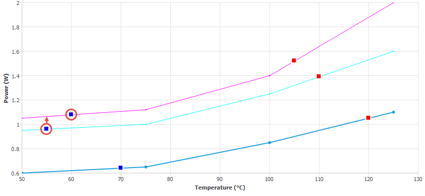
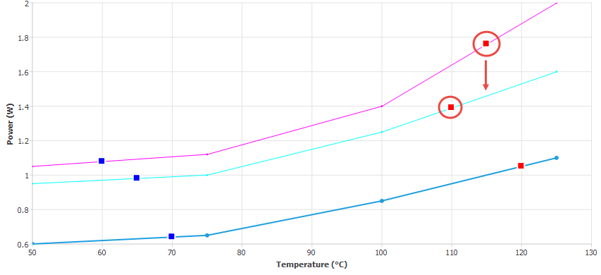
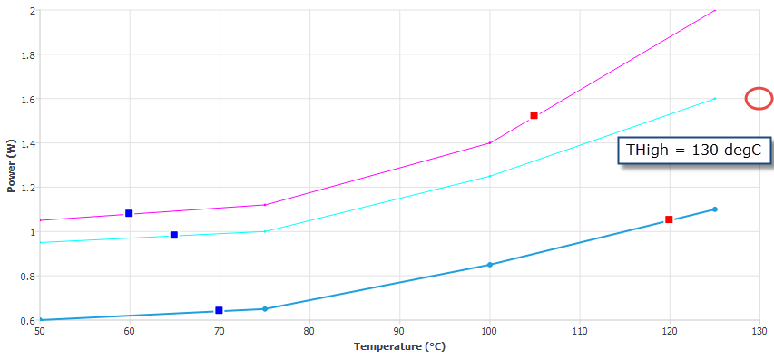

Translator Messages (9000 Series)
Translator Error Messages
E/9001 - Failed to save Solver Control data to disk (Wrong privileges or file system full?)
Check with your systems administrator.
E/9002 - Failed to save Solver List data to disk (Wrong privileges or file system full?)
Check with your systems administrator.
E/9003 - Failed to save geometric variable data to disk (Wrong privileges or file system full?)
Check with your systems administrator.
E/9004 - Cannot access Translator-output directory (protections wrong)
Check write-protection on the solution data directory.
E/9005 - Object does not lie completely inside a single localized grid
Some objects, when in a localized grid space, must be located wholly inside or on the edge of a single localized grid space. These objects are fans, recirculation devices, fixed flows, compact components, heat sinks, thin sloping blocks.
E/9012 - Too few grid-cells to be solved
For a 2D model you need at least two grid cells in the X and Y directions. For a 3D model you additionally need at least two grid cells in the Z direction.
E/9013 - 3D option needs more than 1 cell in Z direction NZ = 1
3D models need at least two grid cells in the Z direction. Generated if a model contains only 2D objects and Dimensionality is set to 3-Dimensional in Model Setup.
E/9015 - Solar Calculation
Solve Solar Radiation has been activated in the Solar Radiation dialog box, and requires positional as well as intensity settings.
E/9016 - Different Fluids Adjacent at Z directed cell face X , Y, Z coordinates
Regions with attached fluids must be totally separated from one another by a solid interface.
E/9017 - Too many fluids
There is a limit of 100 regions with different attached fluids.
E/9020 - Compact heat sink base is overwritten object name, Blocked by: object name
Overwriting the compact heat sink base seriously degrades its efficiency. Move the heat sink or the object so they no longer overlap.
E/9097 - Monitor point for transient attribute is no longer valid [monitor point | see transient attribute]
A monitor point specified in the Multiplier vs. Temperature tab of transient attribute has either been deactivated (in which case it is named) or deleted (in which case you will have to examine the transient attributes for an unspecified Associate Monitor Point).
E/9101 - Compact component junction-board interface overwritten. Change node tree precedence object, Blocked by: object
A PCB is below a 2-Resistor Compact Component in the data tree hierarchy. Promote the PCB above the Compact Component.
E/9106 - Potential Source is not electrically connected to other Potential Sources Source
Joule Heating is switched on and geometry that has Potential Source attributes attached is not inter-connected by electrically conducting (that is non-dielectric) material. Check circuit geometry for continuity.
E/9107 - Potential source is not electrically connected to a Fixed Value Potential Source Voltage
Joule Heating is switched on and no voltage has been defined. Define a Fixed Value Potential Source attribute and attach to a Source SmartPart that is located on the circuit geometry.
E/9108 - Failed to realize object
Object ignored by the mesher and solver.
This can occur for PCBs if the dielectric or conductor material has Orthotropic or Temperature Dependent conductivity and the % Conductor By Volume is less than 100. In such cases, E/19021 is also generated.
Translator Warning Messages
W/9001 - Object has been entirely over-written over-written object, Blocked by:over-writing object
Coincident objects, the last one in the hierarchy normally takes precedence. See “Construction Precedence Rules”. Where an object has been overwritten by a combination of objects, then over-writing object is output as <multiple objects>, and it is up to the user to identify the objects.
W/9003 - Overlap of this object with another is disallowed therefore it is deactivated
See geometry hierarchy description “Construction Precedence Rules”.
W/9012 - Fluid flow entirely blocked by solid, or not directed into solution domain - it is deactivated
The flow exit is obscured by a solid. You might just need to rotate it by 180°.
W/9013 - Object is in contact with more than one External Boundary surface therefore it is deactivated
Generated when no unique ambient can be deduced by the software. Move object or reallocate ambient.
W/9014 - Object set to conducting with no material attached therefore it will not conduct heat
A conducting object has no material attached, so the conduction and friction sources will be deactivated. However, the obstruction caused by the object will remain and unless you attach a material to the object, the results will be incorrect.
W/9021 - Resistance is NOT collapsed but has planar resistance property attached therefore it is deactivated
Volume resistance with a planar property type is inconsistent. Either collapse the resistance or set the resistance attribute type to volume.
W/9022 - Resistance is collapsed but has volume resistance property attached therefore it is deactivated
Planar resistance with a volume property type is consistent. Either un-collapse the resistance or set the resistance attribute to planar.
W/9024 - Resistance in partial contact with external boundary surface therefore it is deactivated
Move resistance to ensure it is either fully attached to an external surface or stands on its own.
W/9028 - Object is in contact with more than one external boundary surface therefore it is deactivated
No unique ambient can be deduced by the software.
W/9029 - Flow direction is parallel to object plane therefore it is deactivated
Flow direction must have a non-zero normal component.
W/9030 - Object or Sloping surface of Object overwritten by blockage blocked object, Blocked by: blocking object
See geometry hierarchy description in “Construction Precedence Rules”.
W/9033 - Fan deactivated: direction must have non-zero normal component
When the angled fan option is activated, the flow direction must have a non-zero normal component.
W/9034 - Inconsistent source - source attribute must be fixed value when used with mass source
When a mass source is active, all other variables must have fixed value source attributes.
W/9040 - More than one symmetry boundary defined on X direction - ignored for radiation
W/9041 - More than one symmetry boundary defined on Y direction - ignored for radiation
W/9042 - More than one symmetry boundary defined on Z direction - ignored for radiation
These messages are generated when both domain faces in the referenced direction are set to symmetry with radiation switched on.
As two radiation symmetry faces on opposite ends of the solution domain does not make physical sense for thermal radiation calculation, the radiation symmetry on both faces is ignored. By using one symmetry face in each direction, the warning is removed.
W/9047 - Thermostat not inside domain: Recirculation device deactivated
The thermostat attached to the recirculation device is located outside of the overall solution domain, hence the recirculation device has not been included in the solution. Relocate the thermostat to be within the overall solution domain and use the drawing board application window to check the location of the thermostat before continuing with the solution.
W/9049 - No source has been activated in attached source property
A source attribute is attached to a source cuboid, but the source has not been activated for any variable.
See Source Attribute Property Sheet in the Simcenter Flotherm Project Attributes Reference Guide for information on how to activate the source attributes.
W/9092 - No active monitor point attached to controller object - controller will be ignored.
There is no monitor point child of a Controller SmartPart, or there is one but it is deactivated.
W/9093 - Inconsistent frequency curves – Minimum temperature limit of a frequency curve doesn’t fall within the operating temperature range of the next highest defined frequency.
Applies to power versus temperature curves for Control attributes. For example, see the power curve below.
W/9094 - Inconsistent frequency curves – Maximum temperature limit of a frequency curve doesn’t fall within the operating temperature range of the next lowest defined frequency.
Applies to power versus temperature curves for Control attributes, see example, below.
W/9095 - A lower frequency controller curve is partially or completely above a higher frequency curve.
Applies to power versus temperature curves for Control attributes, see example below. This power curve will also generate a W/9093 and a W/9094 message.

W/9096 - No Control attribute attached to controller.
A Control attribute is attached to a Controller SmartPart from the Construction tab of the Controller property sheet.
W/9097 - Controller attribute curves should span the full range between TLow and THigh to enable stepping between curves
Applies to power versus temperature curves for Control attributes. For example, for the middle curve below, THigh has been defined as 130 degC, but the maximum temperature defined for the curve is 125 degC.

Translator Information Messages
I/9007 - Collapsed plate thickness extends more than one cell, results unpredictable, consider modeling as thick plate
With Activate Plate Conduction checked in the Solver Control tab, the program has detected a collapsed cuboid with thickness in the collapsed direction greater than that of the grid cell in that direction.
Collapsed cuboids are considered sub-cell features. Consider modeling the plate using uncollapsed cuboids.
I/9008 - Symmetry boundary cannot overwrite open boundary - boundary will remain open
An attempt has been made to overwrite an open domain boundary with a symmetry face of a cutout. An open boundary cannot be overwritten by a symmetry boundary, so it remains open.
I/9010 - Symmetry Boundary overwritten with attached Ambient. All settings for heat transfer coefficient and radiant temperature will be applied.
By default, no heat or fluid flow passes through a symmetry plane. A symmetry boundary with an attached ambient no longer acts as a symmetry plane for heat transfer, allowing heat flow through the symmetry plane. Fluid flow will still be prevented.
I/9011 - Open External Boundary surface without Ambient Property
Global ambient will be used by default - check that this is what is intended.
I/9012 - Object has not been placed on a Solid or Domain Boundary
You are attempting to locate a fixed flow or recirculation device in an unsuitable position.
I/9014 - PCB blocks > 1/2 cell so changed to complete blockage
Blockage caused by component will fill the near-board cell.
I/9015 - Thermal Power is ignored for SmartParts
Thermal power can only be attached to individual cuboids.
I/9016 - Fan curve - local minima ignored
If a fan curve has a local minima, then Simcenter Flotherm uses a modified fan curve which ignores the minima.
See Usage Notes under Fan Curve Chart Dialog Box in the Simcenter Flotherm SmartParts Reference Guide.
I/9017 - Radiation property attached to surface of non-conducting block
Radiation properties attached to non-conducting blocks have no effect and are ignored. Radiation sources can only be applied to conducting objects.
I/9021 - No Flow Boundaries, but user-set Convection Velocity is 0
Set the EFCV in the Solver Control tab.
I/9022 - Change in variables, cannot continue residual display
Solution continues, but display restarts from current iteration number.
I/9033 - Total number of Grid Cells are: XXXXXX + YYYYYY from embedded conduction solver = ZZZZZZ
Details of the generated mesh reported for all models, where:
XXXXXX is the normal system plus the localized grid cell count.
YYYYYY is the contribution from the embedded conduction solver, if appropriate.
ZZZZZZ is the total grid size (XXXXXX + YYYYYY).
I/9041 - At least 2 Components intersect
Sanity check shows there are discrete PCB components overlapping. Check the PCB property sheet.
I/9042 - A Component's X position is located off the board
I/9043 - A Component's Y position is located off the board
I/9044 - A Component's X boundary is located off the board
I/9045 - A Component's Y boundary is located off the board
Sanity check shows the boundary of the PCB component extends beyond the perimeter of the PCB.
I/9050 - Resistance property attached to 2D fan is ignored
In the case of 2D fans, the flow velocity is calculated from the fan curve and local pressures only because any attached resistance acts at the same location as the fan primitive, so the fan cannot detect a pressure drop. For 3D fans, however, the resistance and fan primitive are located at opposite ends of the fan, so a pressure drop can be detected.
Also see “Modeling the Effects of Finger Guards or Grilles” under Applications of Fan SmartParts in the Simcenter Flotherm SmartParts Reference Guide.
I/9051 Compact Component interconnect resistance partially over-written
Compact components use collapsed cuboids to represent component-board interconnect resistances such as balls/pins, and the standoff resistance. This message is issued when any of these collapsed cuboids are partially overwritten by another object, as this will affect the compact component representation, and thereby have an influence on the results.
Any of these collapsed cuboids which are completely over-written will generate a "W/9001 - Object has been entirely over-written" message.
The most likely cause of this message is that the component is positioned in the project data tree above the board on which it sits. The remedy is to make sure that the board appears before any attached compact components in the data tree.
I/9078 Model is transient but density or specific heat have values of 1.0 in the material attribute material attribute name
Although a solution will be attempted this warning is issued to make you aware that either the Density or Specific Heat of a material has been defined as having a value of “1.0”. The message is only generated if a transient solution has been selected.
I/9083 - Transient attribute may impose a negative transient multiplier. Fan will be deactivated during this transient condition object
This message appears when a fan is attached with a transient attribute and the transient multiplier for that attribute will be negative at some point during the total solution time. Applies for both the Multiplier vs Time and Multiplier vs Temperature options.